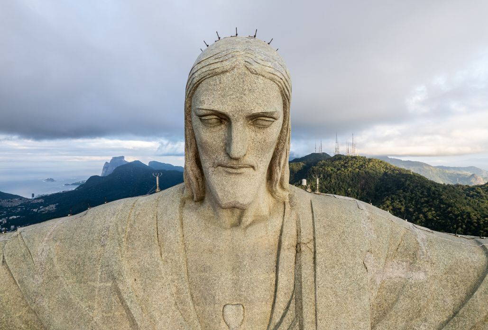
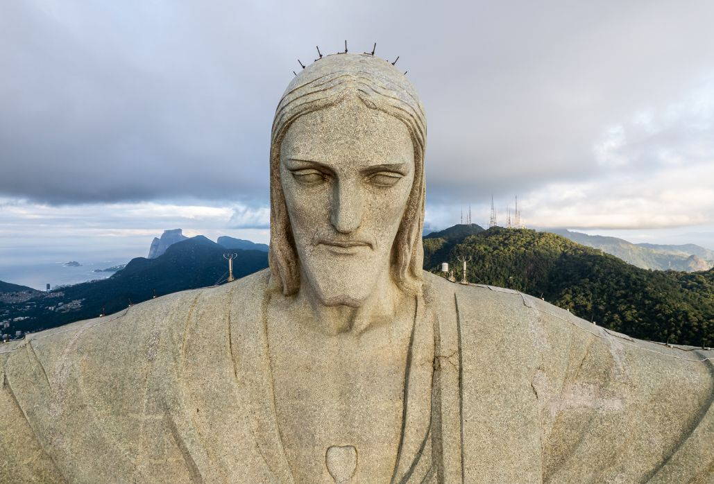
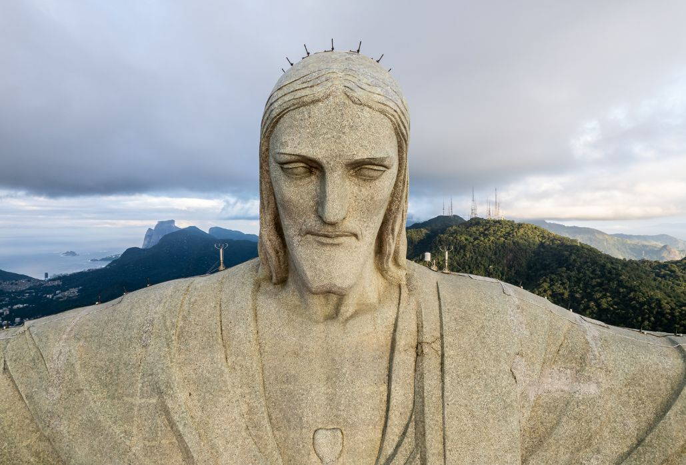

Photo Gallery
 


Christ the Redeemer is an iconic statue of Jesus Christ located in Rio de Janeiro, Brazil. This colossal monument stands atop the Corcovado mountain and overlooks the city with open arms, symbolizing peace and welcoming visitors from around the world.
The statue, standing at a height of 30 meters (98 feet), was completed in 1931 and is considered one of the New Seven Wonders of the World. It is made of reinforced concrete and soapstone, showcasing the artistry of Brazilian sculptor Paul Landowski and Brazilian engineer Heitor da Silva Costa.
Christ the Redeemer is not only a religious symbol but also a cultural and architectural marvel. Visitors can reach the summit by train or hike, enjoying panoramic views of Rio de Janeiro and the surrounding landscape.
The monument is often illuminated at night, creating a stunning spectacle visible from various parts of the city. It attracts millions of tourists annually, making it a must-visit landmark in Brazil.
Christ the Redeemer stands as a testament to the rich cultural heritage and spiritual significance of Brazil.

| Location | Rio de Janeiro, Brazil | ||||||||||
| Height | 30 meters (98 feet) | ||||||||||
| Construction Completed | 1931 | ||||||||||
| Materials | Reinforced concrete and soapstone | ||||||||||
| Architect | Paul Landowski | ||||||||||
| Engineer | Heitor da Silva Costa | ||||||||||